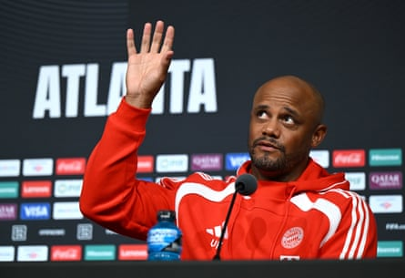
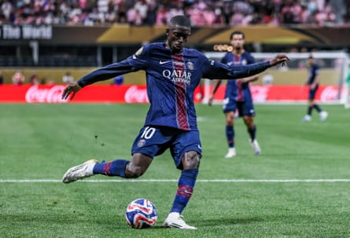

T he last time they crossed paths, Vincent Kompany was on his way in and Luis Enrique was on his way out. It was late November at the Allianz Arena and Bayern Munich’s new manager waited by the press room while his opposite number at Paris Saint-Germain spoke to the media; as he listened in, he could hardly believe what he heard. “It was completely over the top,” Kompany recalled in Atlanta when he again followed Luis Enrique into a chair lined up before the cameras, and before another big night, seven months later and more than 7,000 miles away. “Now we’re talking about the same game from a totally different perspective; it’s interesting to press fast forward and see how much things can change.”
That night, Bayern beat PSG 1-0 in the Champions League . Five games into the competition, PSG had won just once, against Girona at the Parc des Princes and that was their third loss, fear growing that even with the new, extended format they might not get out of the group. “I heard all these big statements: ‘it’s all over’,” Kompany said. “Most games they should win 5-0 and somehow it’s 1-1, or they lose and it didn’t reflect their dominance. You look at the team now, the evolution, and it’s nice to see that in those moments the consistency paid off. He was strong enough to continue. And that’s not a compliment, that’s just a fact.”
And the facts are these: now PSG are the European champions , having won the final with the biggest margin ever. They head into the quarter-finals of the Club World Cup in Atlanta – a game Kompany described as a “perfect storm” and one he said he would buy a ticket for if he didn’t have to sit down on the bench – and do so as favourites. Not just for this competition, but beyond, the culture shift and the immense resources that brought their long wait to an end reinforcing the impression this is a team that could dominate for some time – even though Luis Enrique did insist “if you don’t evolve, you’re dead”.
“They’re an amazing team, there are no two ways about it, and the key word is that they are a team,” Kompany said. “It’s not just the individual quality, it’s that as a team I haven’t seen many who behave with that intensity in every phase of the game. And I mean, it’s everything . They are the Champions League winners, they come from a period of success and there is no reason to think they are not going to be at their best tomorrow. But if I could pick one team to face, it would always be the winners and they are the winners. I wouldn’t have it any other way.
Kompany continued: “The kind of game that PSG have been able to develop, which is linked to their success, has been very impressive. They don’t just rely on the tactical side, or the individual qualities; they rely on the principles of the team. If you look at a game, tactics can change all the time. But these are principles.”
Vincent Kompany talks to the media before Bayern’s clash with PSG.Photograph: Shaun Botterill/FIFA/Getty Images
Principle was a concept that Kompany returned to here, something deeper than just the play for which his admiration was clear. At one point he called PSG’s principles – and indeed Bayern’s own – “quite extreme”. He discussed their willingness to press high, the intensity, the willingness to run and run, expressing a sense that there is something a little different about them, and that comes down to the coach, handed an authority others were denied in Paris.
If there is an image of that, perhaps it is Ousmane Dembélé on the edge of the area, poised like a sprinter, to chase down the goalkeeper. After the Champions League final, Luis Enrique said he would give him the Ballon d’Or: “Not just for the titles he won or the goals he scored, but for his pressing, for the way he defended in this final: that is what you call leading a team.”
There were echoes there of a scene in the superb documentary No Tenéis Ni Puta Idea in which Luis Enrique tries to inspire Kylian Mbappé by talking to him about his idol, basketball player Michael Jordan. Jordan, he tells Mbappé, defended with his life and, never mind the points, that was what made him a leader. At the end of the series, when PSG are eliminated from the Champions League and everyone knows Mbappé will leave, many of them fearing the worst, there is a line when Luis Enrique says that next year they will be better; next year he will control all the players.
Ousmane Dembélé prepares to shoot for Paris Saint-Germain during the 2025 Club World Cup.Photograph: Sports Press Photo/Getty Images
Which of course means controlling the club too, its culture. For now at least, the hierarchy buys into it: how could they not after the coach was as good as his word? There was a line Nasser al-Khelaifi used after training at the Fifth Third Stadium, 30 minutes outside Atlanta, on Friday morning that summed it up, a new identity he is keen to express now, having turned away from what he had tried before, entrusting in a coach like never before. “We have 23 or 24 warriors who fight for their coach; their motivation is to fight in every game.”
When he was asked about Dembélé and the Ballon d’Or, Khelaifi added: “His season was magnificent. If he doesn’t win the Ballon d’Or, it’s the Ballon d’Or’s problem. He’s a star, but the star now is the team.”
There was also laughter at Fifth Third Stadium and lots of it. For all the talk of work, commitment, solidarity – and it is real – there is something else, something simple: enjoyment. Why does Dembélé, say, buy into an idea? How can it be that he is doing things he never did before? Because he likes it. Because it’s enjoyable. Football is supposed to be fun. That’s a principle too. There is the moment when Luis Enrique corrected himself here, and there, both managers hoped, in what may well be the game of this Club World Cup so far. What, perhaps, even should be.
“The players know the demands. When they are all working for the team, the, responsibility is bigger than it is as an individual. Freedom is fighting for your colleagues, freedom is fighting for your club, freedom if fighting for your team,” Luis Enrique said. “‘Fighting’? It is playing football, which is what we try to do. This group of players try to take playing good football to the limit. This is a group of players who want not just to win but to offer a spectacle, to make our fans like it and all fans like it.”
Themselves too, and that is at the heart of it all, Luis Enrique insisted. Football, he says, is a fiesta, fun. It’s supposed to be anyway, however serious it sometimes gets. “It’s very basic, very simple and very difficult at the same time. It’s easy to find the words to say it but actually doing it is harder,” he said. When the word “enjoyment” was put to him, he replied: “I think that’s the key to everything we do, the key to me as a coach. At every club I say that our objective is to provide a show. People don’t go to the theatre or cinema to get bored. And performance level can go hand in hand with enjoying it. And that’s the players we want.
But it’s not just to win, it’s playing a way we think is attractive for everyone.”